relation between car sharing services and the economic status of users
research question :
the relations between car sharing services and the economic status of users
INTRODUCTION and Methodology:
Traffic congestion is a ‘global’ issue, and people that are wealthier often own their cars, the middle class may use car-sharing services to save money.
Our research hypothesis will chekt the connection between the usage of car-sharing services and socio-economic status In Tel Aviv. the Auto Tel program is an example of car sharing service,The Auto Tel service, operated by the city of Tel Aviv, provides car-sharing services to its residents
In this research, we aim to determine whether this hypothesis is true. We collected data on individuals drives using Auto Tel sharing cars data , including their geographic coordinates. we aggregated the data to statistical zones by performing a spatial , we linked this data to socio-economic status indicators. Our goal int this woel is to analyze the relatishon between economic status and the usage patterns of the Auto Tel car-sharing program.
Literature1:
Car-sharing services: An annotated review
It also can raise awareness of the social and environmental impacts of private car usage and supports multi-modal transportation- allowing people to combine different ways of travel such as trains, buses, and private cars in a single trip.
the three kin of a sharing car services :
• tow way The cars are parked at parking lots that are defined by the service provider or the local administration and the trips must start and end at the same place.
• one way -The parking lot where the trip ends can be different from the parking lot where it started. The variety of parking lots is predefined by the operator.
• free floating: in this method cars are parked freely in public spaces within the operational area the trip can start and end at any point in this area.
Car sharing companies must consider strategic and econoomic sdecisions when planning the service that affect the users; such as defining fleet size, location of facilities, boundaries of urban areas service, and managing the local demand.
it reavels that car-sharing services are more popular in high-density neighborhoods, where public transportation is more efficient and private car use is less frequent. this suggest the sharing car ar parth of the public transportation services
Literature2:
Human mobility and socioeconomic status: Analysis of Singapore and Boston
the study cheks the relation between socio-economic status and mobility and accessibility, zooming on the mobility of populations and the influence of regional ecomnis
the movement patterns, considering the spatial extent of the individual’s activity space, the frequency of daily mobility, the variety of movements between important activity locations.
The stufy hypothesis is that human patterns are related to their regional socio-economic characteristics such as per capita income and poverty rate.
the level of mobility is esamden through the spatial scope of a person’s activity space- how regularly their mobility is on daily basis , the variety of movements between important activity locations, and the unity of mobility traces.
The study uses two types of socioeconomic data - housing prices in Singapore and per capita income in Boston. Wealthier user groups tend to travel shorter distances in Singapore, while in Boston they travel farther. Other mobility indicators, such as the number of activity locations, activity and travel variety, show similar characteristics in different socioeconomic classes.
The conflicting findings of the artical on two cities shows a complected relation between travel distance and wealth. These differences are orginate in the spatial arrangement of cities themselves , but this is no part of ouerk work and previsosly oin vastgeye This can largely explain the spatial shape of cities in the United States, where wealthier people live in the suburbs and more disadvantaged people occupy city centers. Although this arrangement is changing,
the Results suggest that the level of wealth, in Singapore and Boston, is not a factor in how people move around the city. The analysis shows that the relation between mobility and socio-economic development is diffrent between cities, and that indicators of mobility may not be effective in certain types of cities.
Literature3:
Does Car Sharing Contribute to Urban Sustainability from User-Motivation Perspectives?
The world is facing many challenges in sustainable are world wide, especially with the need for economic development amid climate change and over population cities in urban areas. In recent years , people have been looking for technologies that provide better service access, leading to the quick rise of the sharing economy.
The sharing economy in this way is a way to reduce the environmental impact and costs of products and increase the availability of means of transportation. This narrow perception makes it possible to take advantage of used resources. that brought an breakthrough in the field of transportation. Car sharing is a part of the ’sharing economy ’that gets people use cars when needed without having to buy one.
study surrounding the motivation of people to use shared vehicles, they found that economic benefits are the most influential in a user’s choice to use a car sharing service. that car sharing can be considered as an alternative viable mobility solution, and that the economic benefits are the strongest motivating factors for using car sharing services.
Literature4:
Indices for testing the hypothesis:
The articles provide a scientific background for us to assume that there is a connection between economic status and the use of shared vehicles. To analyze this assumption, we used: - carto_pop: Using in sharing cars divided by population - age_y_pec: Young people percentage in population - age_a_pec: Adult people percentage in population - Vehicle2up_pcnt: Percentage of households with two or more vehicles. - SelfEmployedAnnual_medWage: Median annual wage for self-employed individuals. - Parking_pcnt: Percentage of households with parking facilities. - AcadmCert_pcnt: Percentage of the population with an academic certificate. - SelfEmployedAnnual_medWage: Median annual wage for self-employed individuals. - Economics_Index: Social economic index from LAMS tables
Libraries
spatial data
we did spatil join count arc gis betwwn auto tel table with coordinate and statistical zones layer of tel aviv to hve count of points in ech poligon
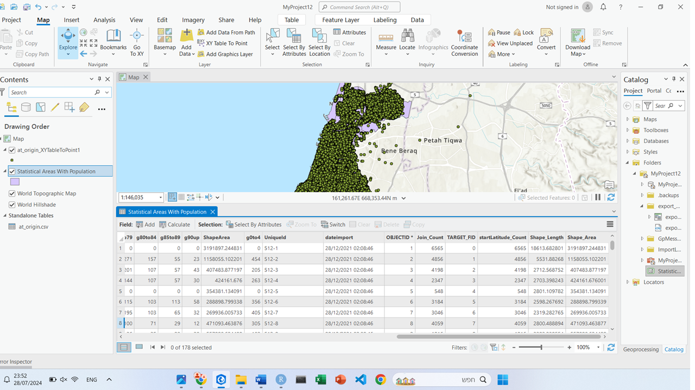the spatil data anlasy
alternative way with ‘sf’ library:
data
[1] 423390 17 reservationId startDate endDate tripActualStart
1 2320455 01/01/2022 00:03 01/01/2022 00:07 01/01/2022 00:07
2 2320454 01/01/2022 00:02 01/01/2022 00:04 01/01/2022 00:04
3 2320453 01/01/2022 00:02 01/01/2022 00:06 01/01/2022 00:06
tripActualEnd tripTimeAmount tripDistanceUsed reservationDate
1 01/01/2022 00:14 439 0 01/01/2022 00:03
2 01/01/2022 00:14 620 1 01/01/2022 00:02
3 01/01/2022 00:17 685 2 01/01/2022 00:02
cancellationDate carId reservationStatus pricePlanId pricePlan
1 01/01/2001 00:00 240 Ended 1 מסלול מתמיד אוטותל
2 01/01/2001 00:00 230 Ended 2 מסלול מתמיד דיגיטל
3 01/01/2001 00:00 94 Ended 3 מסלול מזדמן
startLatitude startLongitude endLatitude endLongitude
1 32.07730 34.77517 32.07991 34.76902
2 32.07669 34.77219 32.08489 34.77369
3 32.07714 34.77848 32.08741 34.77286[1] 178 40 oidezor msezor krova ktatrova g5to9 g10to14 g15to19 g20to24 g25to29 g30to34
1 1 111 1 11 0 0 0 0 0 0
2 2 112 1 11 475 403 312 266 229 296
3 13 113 1 11 1169 930 717 606 542 742
g35to39 g40to44 g45to49 g50to54 g55to59 g60to64 g65to69 g70to74 sumpop shana
1 0 0 0 0 0 0 0 0 0 0
2 405 448 453 322 326 349 434 514 6191 2020
3 1006 1019 894 731 531 521 546 603 12327 2020
g75to79 g80to84 g85to89 g90up ShapeArea g0to4 UniqueId dateimport
1 0 0 0 0 3191897.2 0 512-1 28/12/2021 02:08
2 271 157 55 23 1158055.1 454 512-2 28/12/2021 02:08
3 332 188 84 30 756403.9 1135 512-13 28/12/2021 02:08
OBJECTID_1 Join_Count TARGET_FID start OBJECTID_12 Join_Count_1 TARGET_FID_1
1 1 6565 0 6565 1 6524 0
2 2 4856 1 4856 2 4919 1
3 13 6067 12 6067 13 6133 12
end Shape_Length_1 Shape_Area_1 Shape_Length Shape_Area
1 6524 0.17899061 3.05000e-04 0.17899061 3.05000e-04
2 4919 0.05248089 1.10672e-04 0.05248089 1.10672e-04
3 6133 0.03510751 7.22761e-05 0.03510751 7.22761e-05[1] 3379 60 LocNameHeb LocalityCode StatArea StatAreaCmb pop_approx change_pcnt
1 כלל ארצי NA NA 9601720 26.7
2 אבו גוש 472 NA 8660 39.8
3 אבו סנאן 473 NA 13900 13.4
pop_density religion ReligionHeb sexRatio inst_pcnt Foreign_pcnt age0_19_pcnt
1 NA 1 יהודים 99.2 NA NA 35.4
2 6558.4 2 מוסלמים 114.3 0.1 5.9 33.3
3 6015.2 2 מוסלמים 108.0 NA 0.2 32.6
age20_64_pcnt age65_pcnt DependencyRatio age_median m_age_median w_age_median
1 52.2 12.4 914.0 30 29 31
2 60.7 6.0 648.2 28 29 28
3 59.5 7.9 681.3 29 27 30
married18_34_pcnt married45_54_pcnt j_isr_pcnt j_abr_pcnt aliya2002_pcnt
1 36.9 76.2 76.1 23.9 25.3
2 41.4 85.4 NA NA NA
3 37.7 87.9 NA NA NA
aliya2010_pcnt israel_pcnt asia_pcnt africa_pcnt europe_pcnt america_pcnt
1 16.5 47.3 8.6 12.1 27.2 4.8
2 NA NA NA NA NA NA
3 NA NA NA NA NA NA
shem_eretz1 MarriageAge_mdn m_MarriageAge_mdn w_MarriageAge_mdn ChldBorn_avg
1 ישראל 24 26 23 2.2
2 25 28 22 2.4
3 24 26 22 2.4
koshi5_pcnt koshi65_pcnt AcadmCert_pcnt WrkY_pcnt Empl_pcnt SelfEmpl_pcnt
1 8.9 33.4 25.8 66.2 86.8 12.7
2 9.7 47.5 16.0 62.4 90.8 8.8
3 11.5 43.5 14.0 59.4 84.6 15.1
HrsWrkWk_avg Wrk_15_17_pcnt WrkOutLoc_pcnt employeesAnnual_medWage
1 38.4 13.5 50.6 104300
2 37.8 11.1 75.4 88500
3 38.6 1.7 67.8 78000
EmployeesWage_decile9Up SelfEmployedAnnual_medWage SelfEmployedWage_decile9Up
1 20.0 80900 20.0
2 6.3 53800 19.0
3 7.8 68200 11.5
hh_total_approx size_avg hh0_5_pcnt hh18_24_pcnt hh_MidatDatiyut
1 3053450 3.0 22.6 22.3 חילוני
2 2400 3.4 26.4 37.5 דתי/ דתי מאוד
3 3930 3.5 25.2 30.8 מסורתי
hh_MidatDatiyut_Name Computer_avg Vehicle0_pcnt Vehicle2up_pcnt Parking_pcnt
1 1 1.3 26.4 30.3 62.9
2 3 0.8 25.0 30.3 53.3
3 2 1.0 18.0 38.9 76.4
own_pcnt rent_pcnt
1 59.3 31.6
2 54.7 21.4
3 78.4 4.9[1] 1635 12 MUNICIPAL.STATUS CODE.OF.LOCALITY yeshoove_h yeshoove
1 0 5000 תל אביב -יפו TEL AVIV - YAFO
2 0 5000 תל אביב -יפו TEL AVIV - YAFO
3 0 5000 תל אביב -יפו TEL AVIV - YAFO
CLUSTER.2019.4. CLUSTER.2017.4. CODE.OF.STATISTICAL.AREA
1 8 8 923
2 8 8 821
3 8 8 735
INDEX.POPULATION.2019.1. INDEX.VALUE.2019.2. RANK.2019.3. CLUSTER.2019.4..1
1 269 -2.496 15 1
2 512 -1.076 226 2
3 2,635 -0.867 283 3
CLUSTER.2017.4..1
1 1
2 3
3 3tiding data
#כל הjoin מבוסס על קוד איזו סטטסיטי
tel=tel|>mutate(age_y_pec=(g20to24+g25to29)/ sumpop )|>
mutate(age_a_pec=(g30to34+g35to39+ g40to44+ g45to49+ g50to54+ g55to59+ g60to64)/sumpop )|>
mutate(carto_pop=start/sumpop)|>
select(msezor,age_y_pec,age_a_pec,carto_pop)
#אם אתה ק:ורצים הסבר על עומודת למס תבדקו בchat
lamas_filtered <- lamas |> filter(LocNameHeb == "תל אביב -יפו")|>
select(StatArea,Vehicle2up_pcnt,employeesAnnual_medWage,Parking_pcnt,AcadmCert_pcnt,SelfEmployedAnnual_medWage )
merged_data <- left_join(tel, lamas_filtered, by = c("msezor" = "StatArea"))#איחו למס ותל איבב
eshkol_filtered=eshkol|>filter(yeshoove_h=="תל אביב -יפו")|>select(CODE.OF.STATISTICAL.AREA,INDEX.VALUE.2019.2.)
final_data <- left_join(merged_data, eshkol_filtered, by = c("msezor" = "CODE.OF.STATISTICAL.AREA"))#חיבור דירוג אשקולים
#צריך להורי הרבה עמודות כמובןfilling missing data and rename
summary datat
msezor age_y_pec age_a_pec carto_pop
Min. :111.0 Min. :0.00000 Min. :0.0000 Min. : 0.0000
1st Qu.:325.2 1st Qu.:0.09832 1st Qu.:0.4226 1st Qu.: 0.3640
Median :522.5 Median :0.12981 Median :0.4699 Median : 0.6862
Mean :540.8 Mean :0.12571 Mean :0.4247 Mean : 1.1248
3rd Qu.:746.8 3rd Qu.:0.16922 3rd Qu.:0.5325 3rd Qu.: 1.0591
Max. :947.0 Max. :0.42366 Max. :0.6614 Max. :31.6882
Vehicle2up_pcnt employeesAnnual_medWage Parking_pcnt AcadmCert_pcnt
Min. : 0.000 Min. : 0 Min. : 0.00 Min. : 0.00
1st Qu.: 0.000 1st Qu.: 0 1st Qu.: 0.00 1st Qu.: 0.00
Median : 4.550 Median : 88450 Median :10.85 Median :15.35
Mean : 9.735 Mean : 77084 Mean :20.03 Mean :23.14
3rd Qu.:15.275 3rd Qu.:144375 3rd Qu.:30.45 3rd Qu.:48.38
Max. :62.800 Max. :255300 Max. :97.70 Max. :63.70
SelfEmployedAnnual_medWage Economics_Index
Min. : 0 Min. :-2.4960
1st Qu.: 0 1st Qu.: 0.0000
Median : 55500 Median : 1.0820
Mean : 48250 Mean : 0.9041
3rd Qu.: 83550 3rd Qu.: 1.7640
Max. :182600 Max. : 2.5250 cor gram
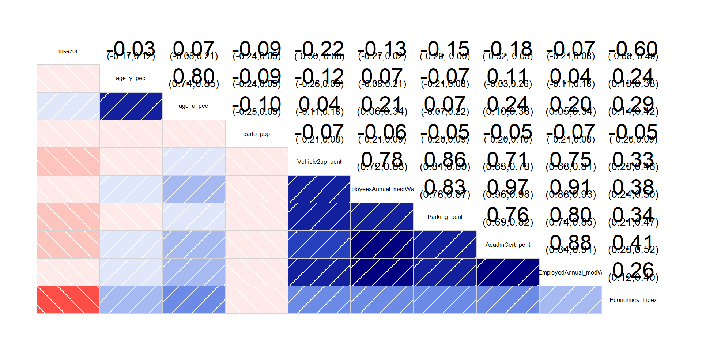Using the corrgram function, we can see that there is a weak to strong correlation between the variables, that is showing the linearity of their relationshions.thers multicollinearity for the variables, asspecialy yeesAnnual_med, Parking_pcnt, AcadmCert_pcnt, and employedAnnual_me. This means these variables are strongly correlated with each other and not only with a single variable. In this cases, the model can be used for prediction but not suitable for measuring the individual influence of these variables due to independence of observations.
checking linearity
ggplot(final_data, aes(y = sqrt(carto_pop),x=sqrt(age_y_pec))) +
geom_point(color = "blue")+geom_smooth(method = "lm") +labs(
title = " carto_pop vs age_y_pec",
x = "age g20-to29 in poulation", # X-axis label
y = "sharing cra using to poplation" # Y-axis label
)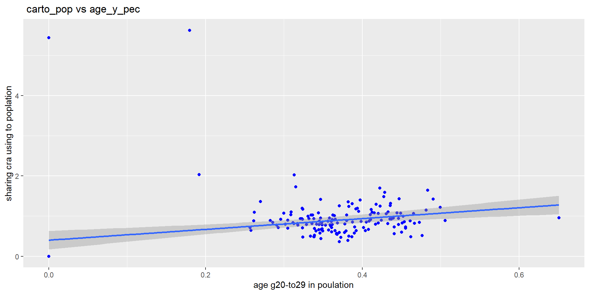
ggplot(final_data, aes(y = carto_pop,x=age_a_pec)) +
geom_point(color = "blue")+geom_smooth(method = "lm") +labs(
title = " carto_pop vs Vehicle2up_pcnt",
x = "age_a_pec", # X-axis label
y = "carto_pop" # Y-axis label
)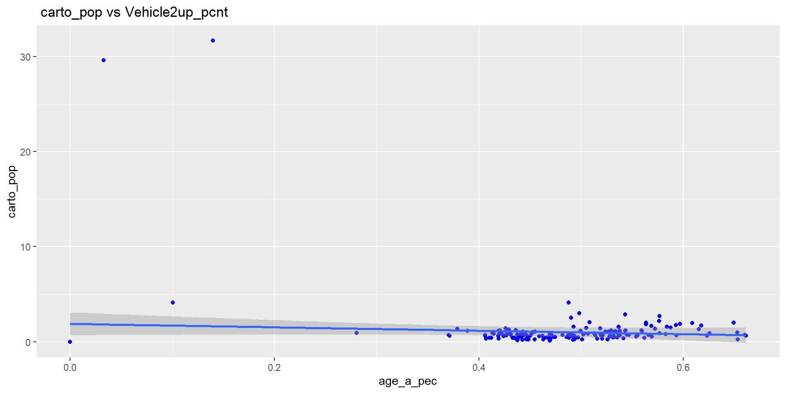
ggplot(final_data, aes(y = carto_pop,x=Vehicle2up_pcnt)) +
geom_point(color = "blue")+geom_smooth(method = "lm") +labs(
title = " carto_pop vs Vehicle2up_pcnt",
x = "Vehicle2up_pcnt", # X-axis label
y = "carto_pop" # Y-axis label
)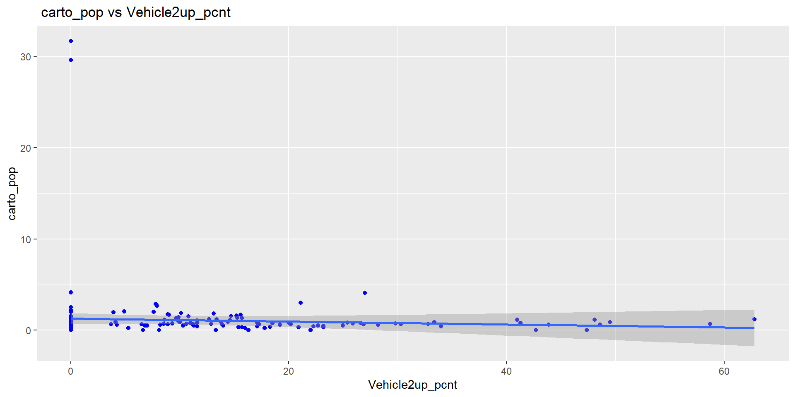
ggplot(final_data, aes(y = carto_pop,x=employeesAnnual_medWage)) +
geom_point(color = "blue")+geom_smooth(method = "lm") +labs(
title = " carto_pop vs employeesAnnual_medWage",
x = "employeesAnnual_medWage", # X-axis label
y = "carto_pop" # Y-axis label
)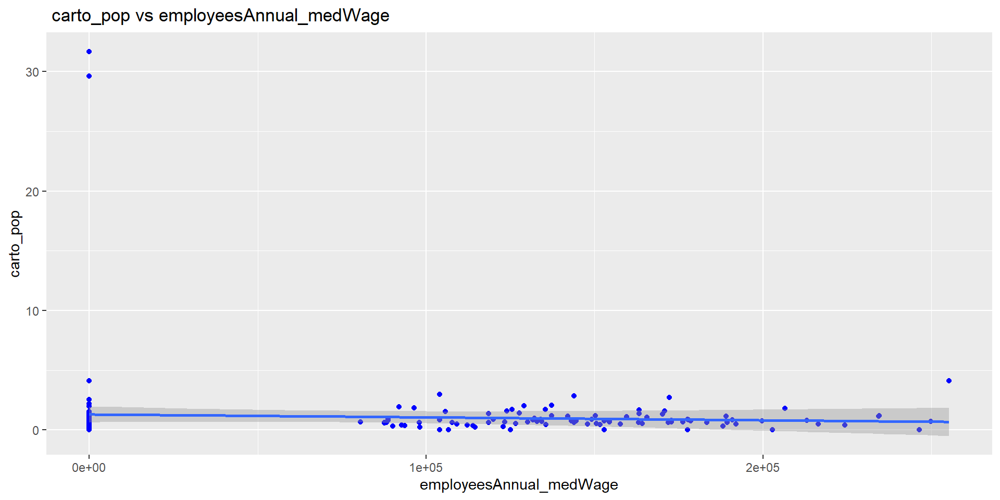
ggplot(final_data, aes(y = carto_pop,x=Parking_pcnt)) +
geom_point(color = "blue")+geom_smooth(method = "lm") +labs(
title = " carto_pop vs Parking_pcnt",
x = "Parking_pcnt", # X-axis label
y = "carto_pop" # Y-axis label
)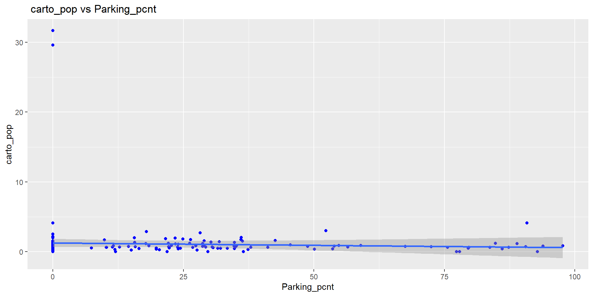
ggplot(final_data, aes(y = carto_pop,x=AcadmCert_pcnt)) +
geom_point(color = "blue")+geom_smooth(method = "lm") +labs(
title = " carto_pop vs AcadmCert_pcnt",
x = "AcadmCert_pcnt", # X-axis label
y = "carto_pop" # Y-axis label
)
ggplot(final_data, aes(y = carto_pop,x=AcadmCert_pcnt)) +
geom_point(color = "blue")+geom_smooth(method = "lm") +labs(
title = " carto_pop vs AcadmCert_pcnt",
x = "AcadmCert_pcnt", # X-axis label
y = "carto_pop" # Y-axis label
)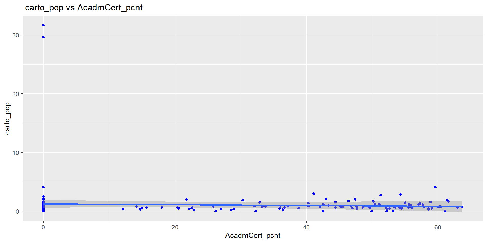
ggplot(final_data, aes(y = carto_pop,x=SelfEmployedAnnual_medWage)) +
geom_point(color = "blue")+geom_smooth(method = "lm") +labs(
title = " carto_pop vs SelfEmployedAnnual_medWage",
x = "SelfEmployedAnnual_medWage", # X-axis label
y = "carto_pop" # Y-axis label
)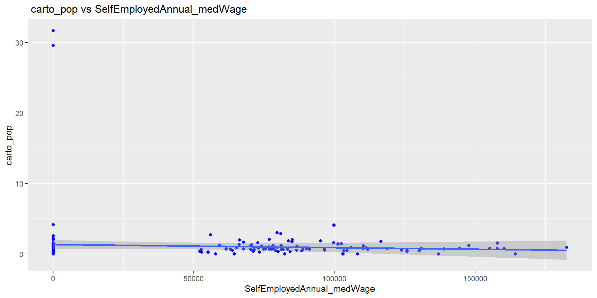
ggplot(final_data, aes(y = carto_pop,x=Economics_Index)) +
geom_point(color = "blue")+geom_smooth(method = "lm") +labs(
title = " carto_pop vs Economics_Index",
x = "SelfEmployedAnnual_medWage", # X-axis label
y = "carto_pop" # Y-axis label
)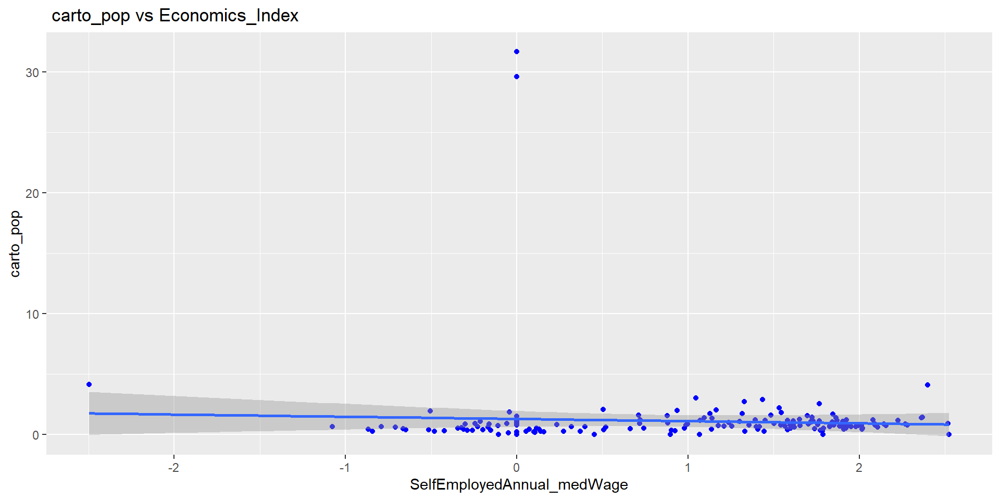
data visualization
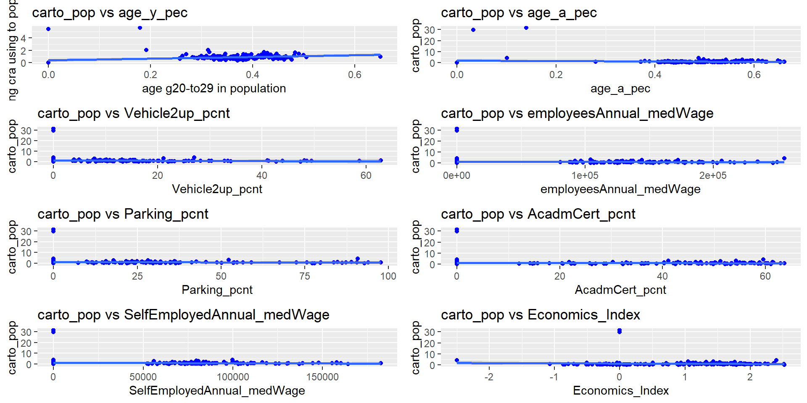we cant see any relay linear connection
geospatil data visualization
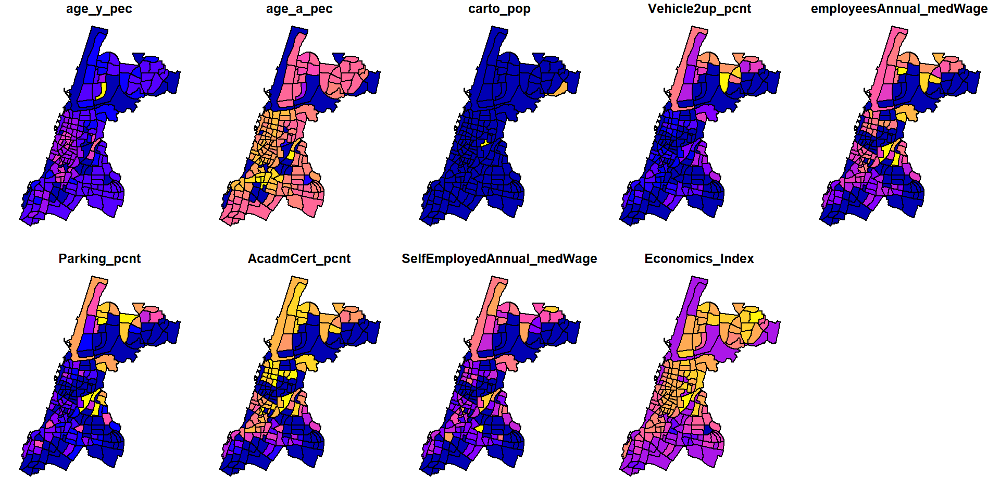normality test
shapiro_results <- sapply(final_data, function(x) if(is.numeric(x)) shapiro.test(x)$p.value else NA)
shapiro_results msezor age_y_pec
1.883383e-07 1.541560e-07
age_a_pec carto_pop
2.289723e-16 6.673668e-27
Vehicle2up_pcnt employeesAnnual_medWage
1.128837e-15 1.065011e-13
Parking_pcnt AcadmCert_pcnt
2.010579e-15 6.869806e-15
SelfEmployedAnnual_medWage Economics_Index
2.029233e-13 2.159792e-07 | Variable | P-value | Normality |
|---|---|---|
| carto_pop | 6.67e-27 | Not normal (p < 0.05) |
| age_y_pec | 2.29e-16 | Not normal (p < 0.05) |
| age_a_pec | 2.29e-16 | Not normal (p < 0.05) |
| Vehicle2up_pct | 1.13e-15 | Not normal (p < 0.05) |
| empAn_medWage | 1.07e-13 | Not normal (p < 0.05) |
| Parking_pct | 2.01e-15 | Not normal (p < 0.05) |
| AcadmCert_pct | 6.87e-15 | Not normal (p < 0.05) |
| SelfEmp_medWage | 2.03e-13 | Not normal (p < 0.05) |
| Econ_Index | 2.16e-07 | Not normal (p < 0.05) |
normality car_to pop
after linear transformation for left skewed data is stil not normal
correlation test Kendall
because the data is not normal
cor1 = cor.test(final_data$carto_pop, final_data$age_y_pec, method = "kendall")
print(cor1)
cor2 = cor.test(final_data$carto_pop, final_data$age_a_pec, method = "kendall")
print(cor2)
cor3 = cor.test(final_data$carto_pop, final_data$Vehicle2up_pcnt, method = "kendall")
print(cor3)
cor4 = cor.test(final_data$carto_pop, final_data$employeesAnnual_medWage, method = "kendall")
print(cor4)
cor5 = cor.test(final_data$carto_pop, final_data$Parking_pcnt, method = "kendall")
print(cor5)
cor6 = cor.test(final_data$carto_pop, final_data$AcadmCert_pcnt,method = "kendall")
print(cor6)
cor7 = cor.test(final_data$carto_pop, final_data$SelfEmployedAnnual_medWage,method = "kendall")
print(cor7)
cor8 = cor.test(final_data$carto_pop, final_data$Economics_Index,method = "kendall")
print(cor8)| Variables | tau | z-value | p-value | Interpretation |
|---|---|---|---|---|
| carto_pop & age_y_pec | 0.2756239 | 5.3835 | 7.306e-08 | highly significant. |
| carto_pop & age_a_pec | 0.3415484 | 6.6751 | 2.471e-11 | highly significant. |
| carto_pop & Vehicle2up_pcnt | 0.0877212 | 1.6085 | 0.1077 | highly significant. |
| carto_pop & employeesAnnual_medWage | 0.1426106 | 2.615 | 0.008922 | highly significant. |
| carto_pop & Parking_pcnt | 0.1208971 | 2.2172 | 0.02661 | highly significant. |
| carto_pop & AcadmCert_pcnt | 0.1683672 | 3.0876 | 0.002018 | highly significant. |
| carto_pop & SelfEmployedAnnual_medWage | 0.1259348 | 2.3093 | 0.02092 | highly significant. |
| carto_pop & Economics_Index | 0.2184676 | 4.2644 | 2.005e-05 | highly significant. |
linear regression model
lm1=lm(carto_pop ~ +age_y_pec+age_a_pec+Vehicle2up_pcnt+
employeesAnnual_medWage+Parking_pcnt+AcadmCert_pcnt+Economics_Index , data = final_data)
summary(lm1)
Call:
lm(formula = carto_pop ~ +age_y_pec + age_a_pec + Vehicle2up_pcnt +
employeesAnnual_medWage + Parking_pcnt + AcadmCert_pcnt +
Economics_Index, data = final_data)
Residuals:
Min 1Q Median 3Q Max
-2.1033 -0.7092 -0.3301 0.1484 29.8571
Coefficients:
Estimate Std. Error t value Pr(>|t|)
(Intercept) 2.063e+00 6.450e-01 3.199 0.00165 **
age_y_pec -3.016e+00 6.332e+00 -0.476 0.63442
age_a_pec -9.629e-01 2.328e+00 -0.414 0.67963
Vehicle2up_pcnt -2.198e-02 3.881e-02 -0.566 0.57194
employeesAnnual_medWage -4.897e-06 1.527e-05 -0.321 0.74884
Parking_pcnt 2.977e-03 2.138e-02 0.139 0.88944
AcadmCert_pcnt 1.792e-02 4.282e-02 0.419 0.67608
Economics_Index -3.659e-02 2.945e-01 -0.124 0.90129
---
Signif. codes: 0 '***' 0.001 '**' 0.01 '*' 0.05 '.' 0.1 ' ' 1
Residual standard error: 3.269 on 170 degrees of freedom
Multiple R-squared: 0.0168, Adjusted R-squared: -0.02368
F-statistic: 0.415 on 7 and 170 DF, p-value: 0.892There are 178 observations in the dataset (170 degrees of freedom with 7 predictors). The linear regression model is showing that none of the predictor variables have a significant effect on crar sharing, as all p-values are above 0.05. The model explains 1.68% carto_pop (Multiple R-squared: 0.0168, Adjusted R-squared: -0.02368), indicating a poor fit.
there are statistically significant correlations between carto_pop and some individual variables, the linear regression model does not explain much of the data. Despite these significant correlations, the linear regression model has a low R-squared value (0.0168) and non-significant p-values for the predictors, indicating that the model explains only a small fraction of the variance This discrepancy is likely due to multicollinearity, where high correlations among predictors.
Conclusions
We can conclude that there is no a sidnifcen relation between car sharing services usage and economics status.None of the indicators predict high usage of car sharing service , It means there is no connection them.Future studies can continue investigating with more data to find the reasom of the relation between the field that we studied of economics and transportation.
bibliography
1.Ferrero, F., Perboli, G., Rosano, M., & Vesco, A. (2018). Car-sharing services: An annotated review. Sustainable Cities and Society, 37, 501-518.
2.Xu, Y., Belyi, A., Bojic, I., & Ratti, C. (2018). Human mobility and socioeconomic status: Analysis of Singapore and Boston. Computers, Environment and Urban Systems, 72, 51-67.
3.Mavlutova, I., Kuzmina, J., Uvarova, I., Atstaja, D., Lesinskis, K., Mikelsone, E., & Brizga, J. (2021). Does car sharing contribute to urban sustainability from user-motivation perspectives?. Sustainability, 13(19), 10588.